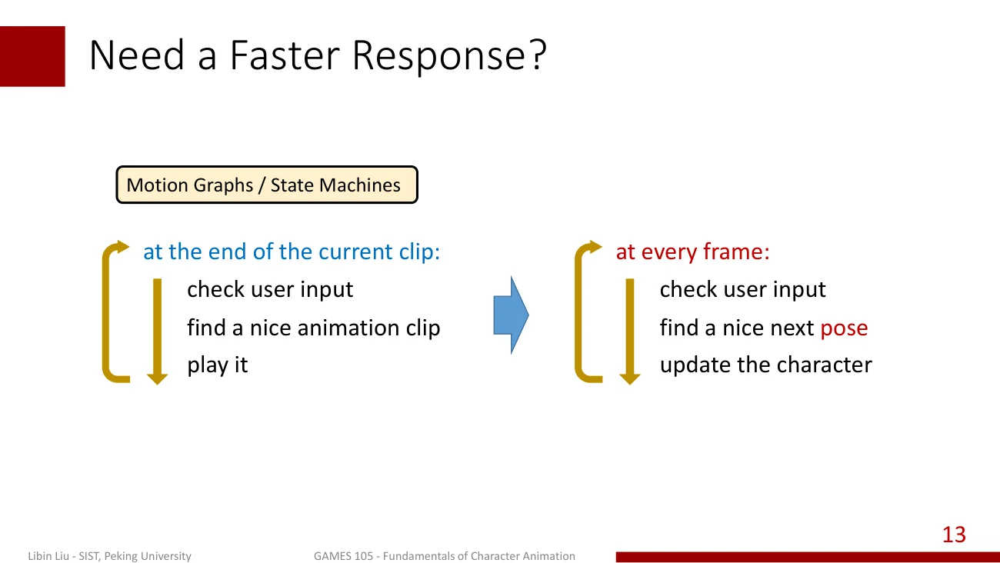
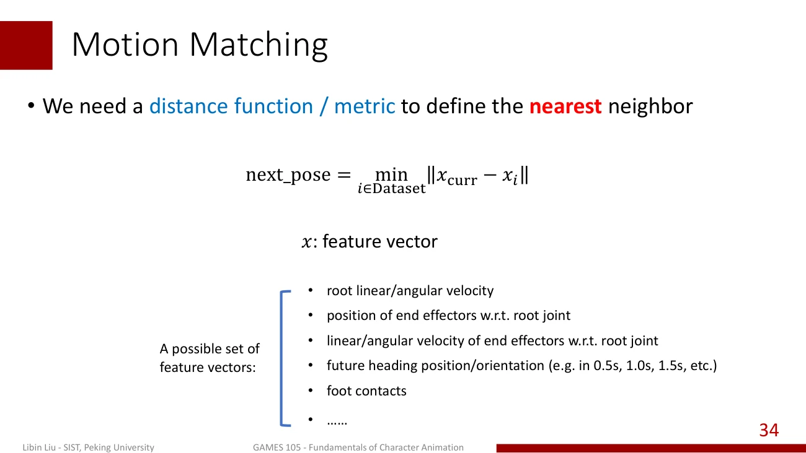
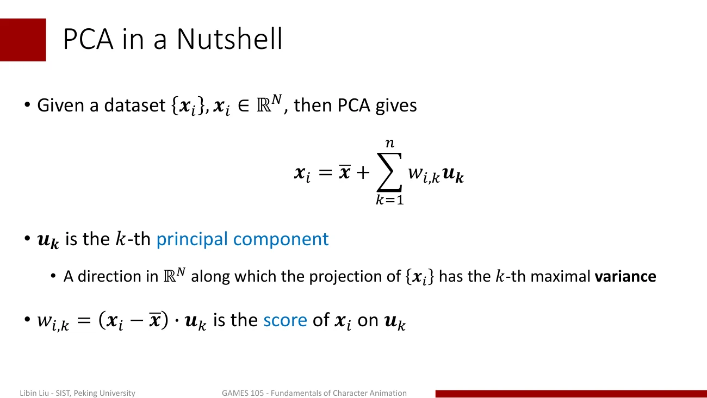
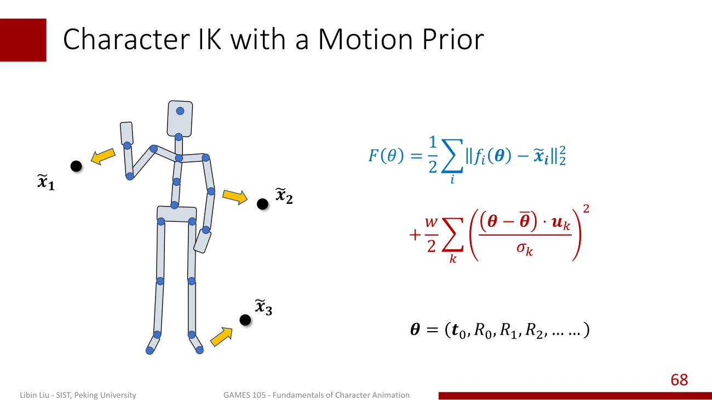
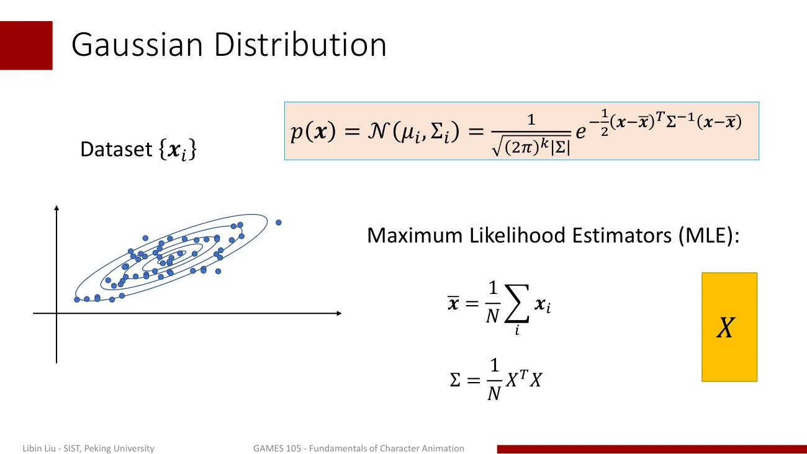
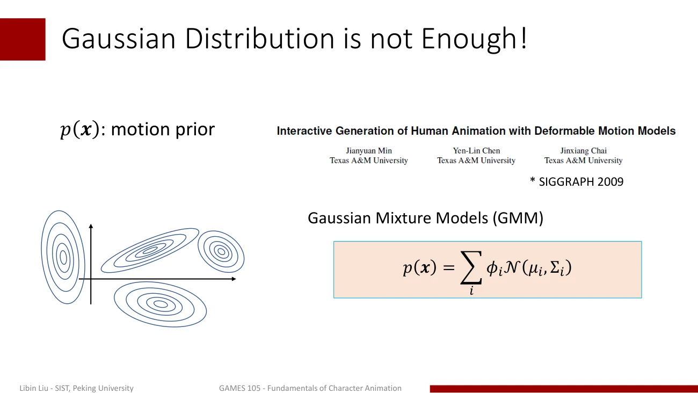

第 6 讲：基于学习的角色动画
从运动图到运动匹配，再到用统计模型与概率先验来评价和合成“自然”动作
◆ 学完这一讲，你应该能
能复述交互式角色动画的两种响应节奏：片段末尾决策与逐帧决策，并说明 Motion Matching 为什么能做到逐帧响应
能写出 Motion Matching 的最近邻检索目标，并列出至少 5 类常用的特征向量分量
能说明人体运动的低维性直觉，并用 PCA 的“均值 + 主成分加权和”形式表示一个姿态
能写出 PCA 的协方差矩阵特征分解形式，并解释特征值即解释方差、得分越小越“不自然”
能把 PCA 先验写进 IK 目标函数（含 λ 与 σ 的归一化），并说明它如何抑制不自然姿态
能说出高斯模型作为运动先验的局限，以及 GMM、GPLVM、神经网络等后续扩展的动机
核心结论速记
交互式动画的本质是“读输入 → 选片段/姿态 → 播放或过渡”，区别只在于决策发生在片段末尾还是每一帧。
Motion Matching 把“选片段”换成“逐帧找最近邻姿态”，用特征向量距离定义相似度，再用弹簧/惯性化混合平滑过渡。
人体运动是低维的：协调性、骨骼肌肉结构与物理规律让自然姿态落在高维姿态空间中的低维流形附近。
PCA 用均值加若干主成分的加权和近似姿态，主成分是协方差矩阵的特征向量，特征值代表该方向解释的方差。
在 PCA 空间里，得分相对特征值越小（偏离主成分方向越少）的姿态越可能自然，这给出了一个可计算的“自然度”先验。
把先验写进 IK 目标函数（残差项 + λ·先验项）就能在满足末端约束的同时把姿态拉向自然流形。
单个高斯不足以描述多模态的运动分布，于是有 GMM、GPLVM 以及基于神经网络的运动先验。
011. 从“片段末尾做决定”到“每一帧做决定”
交互式角色动画要解决的问题只有一句话：角色如何响应用户输入。课件先把最朴素的方案摆出来：检查用户输入 → 找一段合适的动画片段 → 播放它。运动图（Motion Graph）与状态机（State Machine）就是这套思路的代表：把动捕片段当作节点，把可以无缝衔接的帧对当作边，在当前片段快要结束时才做一次决策，选下一条边、播下一段。
这种“片段末尾决策”的优点是实现简单、片段内部质量有保证；缺点是响应有延迟——用户中途改方向，角色要等当前片段播完才转向。课件用一页对比把问题挑明：如果要求更快的响应，就必须把决策从“片段末尾”挪到“每一帧”：每一帧都检查输入、每一帧都找“下一个姿态”、每一帧都更新角色。这就是运动场（Motion Fields）与运动匹配（Motion Matching）的出发点。
注意这里的层次：Motion Graph 决策的单位是片段，Motion Matching 决策的单位是姿态。单位越小，响应越快，但对“如何选、如何接”的要求也越高——这正是后面要解决的距离函数与平滑混合问题。

常见坑
把 Motion Matching 当成“更快的状态机”：它不只是切换更快，而是检索单位从片段变成了姿态，特征与混合方式都不同。
逐帧决策却仍用片段级的硬切换：会出现每帧跳变、抖动，必须配合混合。
UE / Unity 落地
UE 的动画状态机（State Machine）与蒙太奇（Montage）属于“片段末尾/事件驱动”的思路；Motion Matching 在 UE5 中由 Pose Search 插件与 Motion Matching 节点提供，属于逐帧检索。
Unity 的 Animator 状态机同样是片段级；逐帧检索需要自己写脚本或使用第三方 Motion Matching 方案。
022. Motion Matching：用特征距离找“下一个姿态”
运动匹配的核心循环可以写成四步：检查用户输入 → 在当前状态附近找最近邻 → 把当前姿态平滑混合到最近邻姿态 → 更新角色。关键在第二步：什么叫“最近”？课件给出一个统一形式： \[ \text{next\_pose} = \arg\min_{i \in \text{Dataset}} \lVert x_{\text{curr}} - x_i \rVert \] 其中 \(x\) 是特征向量（feature vector），不是原始关节旋转。课件列出的候选特征包括：根节点的线速度/角速度、末端执行器相对根节点的位置、末端执行器相对根节点的线速度/角速度、未来若干时刻（如 0.5s、1.0s、1.5s）的朝向位置、脚部接触状态等。直觉是：这些量描述了“角色现在在做什么、接下来要往哪去”，比逐关节旋转更能反映运动意图。
只做检索还不够，还要“接得顺”。课件给出两条工程手段：不要每帧都检索（每隔几帧搜一次即可），以及把当前姿态平滑混合到目标姿态，推荐惯性化混合（inertialization blending）。性能上则要用高效数据结构（如 KD-tree）加速最近邻搜索，并维护一个高效的候选数据集（课件提到 “Dance card” 这类按当前状态预筛候选的做法）。
一句话总结：Motion Matching = 特征设计 + 最近邻检索 + 平滑过渡 + 工程加速。

补充说明
课件把 Motion Fields 与 Motion Matching 并列：前者对 N 个最近邻按用户输入做混合（可用强化学习等方法），后者直接平滑过渡到单个最近邻。
常见坑
特征不做归一化：速度量纲（m/s）与位置量纲（m）混在一起，距离被大数量级特征主导 → 检索结果偏向某一类特征 → 按经验给每类特征加权或标准化。
每帧都全量搜索：数据集大时帧率崩 → 降低搜索频率、用 KD-tree、或按状态预筛候选。
直接硬切到最近邻姿态：出现跳变 → 用惯性化混合或弹簧式平滑过渡。
UE / Unity 落地
UE5 的 Motion Matching（Pose Search）里对应概念是 Database、Trajectory（未来轨迹特征）、Pose 特征与 Decay/Blend 参数；惯性化混合对应 Inertialization 节点。
Unity 没有内置 Motion Matching，通常用脚本维护特征向量并做最近邻，再配合 Animator 的 CrossFade 或自定义混合。
Motion Matching 主循环伪代码（cpp）
// 每帧调用
void Update(float dt, Input in) {
if (frameCount % searchInterval == 0) {
Feature xc = BuildFeature(currentPose, in);
int best = -1; float bestD = FLT_MAX;
for (int i : candidateSet) { // 可用 KD-tree 预筛
float d = Distance(xc, database[i].feature);
if (d < bestD) { bestD = d; best = i; }
}
targetPose = database[best].pose;
}
currentPose = InertializeBlend(currentPose, targetPose, dt);
frameCount++;
}033. 人体运动为什么是低维的：PCA 的直觉
课件先问一个看似哲学的问题：什么看起来才“自然”？然后给出可操作的答案：自然动作不是姿态空间里随便一个点，而是落在一个低维结构附近。原因有三：手臂与腿的运动是协调的（不会各走各的）、骨骼肌肉结构限制了关节组合、物理规律约束了运动。于是“整个姿态空间”很大，但“自然姿态”只占其中很小一片——这就是人体运动的低维性（low-dimensionality）。
主成分分析（Principal Component Analysis, PCA）就是把这个直觉变成算法的工具：它找出各维之间的相关性并做降维。给定数据点 \(x_i\)，PCA 找一个单位方向 \(u\)，使得所有点在 \(u\) 上的投影 \(w_i = x_i \cdot u\) 的方差最大；这个方向就是第一主成分。可以证明 \(u\) 是协方差矩阵 \(X^T X\) 的最大特征值对应的特征向量（\(X\) 的每一行是去均值后的样本）。
把这件事做 \(n\) 次，就得到一组正交主成分 \(u_k\)，任意姿态可近似为： \[ x_i \approx \bar{x} + \sum_{k=1}^{n} w_{i,k} u_k \] 其中 \(\bar{x}\) 是均值姿态，\(w_{i,k} = (x_i - \bar{x}) \cdot u_k\) 是得分（score）。课件用行走数据演示：少数几个主成分就能解释大部分方差，取到能解释足够（例如 95%）方差的前 \(n\) 个即可。

常见坑
忘记去均值：直接用原始姿态做协方差分解，第一主成分会被均值方向污染 → 先减 \(\bar{x}\)。
把主成分当成“某个关节”：主成分是全体维度上的一个方向，通常同时牵动多个关节，不能单独解释为某根骨头。
UE / Unity 落地
UE/Unity 里没有直接暴露 PCA，但“用少量参数驱动全身姿态”的思想对应姿势驱动（Pose Driver）、变形目标（Morph Target）与动画曲线压缩。
工程上常把 PCA 当作离线分析工具：对动捕库做降维，观察需要多少维才能重建动作。
044. 从 PCA 到“自然度”：把先验写进 IK
PCA 不只是压缩工具，它还给出一个可计算的“自然度”。课件指出：在 PCA 空间里，一个姿态的得分相对其特征值 \(\sigma_k\) 越小，越可能自然；换句话说，偏离主成分方向越少越自然。这等价于用高斯分布 \(p(x) = \mathcal{N}(\bar{x}, \Sigma)\) 评价姿态，而 \(\Sigma = X^T X = U \,\mathrm{diag}(\sigma_1,\dots,\sigma_N)\, U^T\)，\(\sigma_k\) 就是解释方差。
把这个先验接到角色 IK 上，目标函数逐步演化：
- 纯 IK：\(F(\theta) = \sum_i \lVert f_i(\theta) - \tilde{x}_i \rVert^2\)，只要求末端满足目标；
- 加参考姿态：再加 \(\lambda \lVert \theta - \tilde{\theta} \rVert^2\)，把姿态拉向某个参考；
- 加运动先验：把参考项换成 PCA 空间里的加权惩罚，即对每个主成分得分 \(w_k = (\theta - \bar{\theta}) \cdot u_k\) 除以 \(\sigma_k\) 后平方求和。
这样做的直觉是：IK 本身有零空间（末端不动但关节可乱动），先验负责在零空间里挑一个“像人”的解。课件进一步把它写成 \(-w \log p(\theta)\) 的形式，与后面的运动合成目标 \(F(x) = f(x) - w \log p(x)\) 统一起来：前者是数据项，后者是先验项，\(w\) 控制两者权衡。

补充说明
课件中先验项的系数与符号在不同页略有展开，核心是“得分除以 \(\sigma_k\) 后平方求和”，再与数据项加权。
常见坑
先验项不除以 \(\sigma_k\)：各主成分量纲与重要性不同，大方差方向会主导惩罚 → 必须按特征值归一化。
\(w\) 取太大：末端约束被先验压过，脚穿地或手够不到目标 → 先调小 \(w\)，再看末端误差。
用未去均值的 \(\theta\) 算得分：得分应基于 \(\theta - \bar{\theta}\)。
UE / Unity 落地
UE 的 Control Rig 与 IK Rig 提供末端约束与关节限制；PCA 先验需要自己在求解器里加惩罚项，概念上类似 IK 的“Preferred Angle”但更强。
Unity 的 Animation Rigging 包提供 TwoBoneIK 等约束，同样可在此基础上加自定义先验。
055. 概率视角：高斯先验及其不足
把“自然度”正式化，就是定义一个概率密度 \(p(x)\)：\(x\) 是自然姿态的概率。给定动捕姿态数据集 \(x_i\)，课件用高斯分布建模： \[ p(x) = \mathcal{N}(\mu, \Sigma) = \frac{1}{\sqrt{(2\pi)^k |\Sigma|}} \exp\!\left(-\tfrac{1}{2}(x-\bar{x})^T \Sigma^{-1} (x-\bar{x})\right) \] 参数用最大似然估计（Maximum Likelihood Estimators, MLE）：均值 \(\bar{x} = \frac{1}{N}\sum_i x_i\)，协方差 \(\Sigma = \frac{1}{N} X^T X\)。课件还展示了它与 PCA 的关系：在主轴坐标下高斯分解为各主成分上独立的一维高斯的乘积，\(w_k\) 的方差就是 \(\sigma_k\)。
有了 \(p(x)\)，运动合成就变成优化问题： \[ F(x) = f(x) - w \log p(x) \] 其中 \(f(x)\) 是用户控制、关键帧、环境约束、IK 等数据项，\(-w\log p(x)\) 把解拉向高概率区域。\(x\) 可以是单帧姿态 \(\theta\)，也可以是一段动作序列或 PCA 得分。
但课件紧接着指出：单个高斯不够。真实运动分布是多模态的（走、跑、跳是不同簇），一个高斯会把概率质量摊到簇与簇之间的“不自然”区域。于是有高斯混合模型（Gaussian Mixture Models, GMM）、高斯过程隐变量模型（GPLVM），以及近年用神经网络表示运动先验的工作。这一讲到此收束：从检索式方法到统计式方法，再到学习式先验。


常见坑
协方差矩阵奇异或接近奇异：高维小样本时 \(\Sigma\) 不可逆 → 加正则项或先做 PCA 降维。
把 \(-w\log p(x)\) 的 \(w\) 当成概率：它只是权重，控制先验相对数据项的强度。
用单高斯拟合走跑跳混合数据：概率在模式之间出现“桥”，合成出四不像动作 → 换 GMM 或分模式建模。
UE / Unity 落地
UE/Unity 都没有内置“运动先验”模块；工程上更多是离线用 Python 拟合 GMM/PCA，再把参数或网络权重导入运行时做姿态评价或修正。
神经网络运动先验在 UE 中通常以自定义动画节点或 ML Deformer 形式接入，属于进阶用法。
引擎对照表
| 概念 / 效果 | Unreal Engine | Unity |
|---|---|---|
逐帧姿态检索 | Pose Search 插件 / Motion Matching 节点 | 无内置，需脚本实现最近邻 + CrossFade |
未来轨迹特征 | Motion Matching 的 Trajectory 特征 | 自定义特征向量 |
平滑过渡 | Inertialization 节点 | Animator CrossFade 或自定义弹簧混合 |
末端 IK 约束 | Control Rig / IK Rig | Animation Rigging（TwoBoneIK 等） |
姿态先验/降维 | 无直接对应，离线分析或自定义节点 | 无直接对应，离线分析或自定义脚本 |
概率运动先验 | 自定义动画节点 / ML Deformer | 自定义脚本或 Barracuda 推理 |
术语双语表
| English | 中文 | 说明 |
|---|---|---|
| Motion Graph | 运动图 | 以动捕片段为节点、可衔接帧对为边的图，在片段末尾做决策。 |
| Motion Matching | 运动匹配 | 逐帧在数据库中检索特征距离最近的姿态并平滑过渡。 |
| Feature Vector | 特征向量 | 描述运动意图的量（根速度、末端位置、未来朝向、脚接触等）。 |
| Inertialization Blending | 惯性化混合 | 用弹簧/惯性模型平滑过渡姿态，避免硬切跳变。 |
| Principal Component Analysis | 主成分分析 | 找方差最大的正交方向，用于降维与去相关。 |
| Explained Variance | 解释方差 | 特征值大小，表示该主成分解释了多少数据方差。 |
| Score | 得分 | 姿态在某个主成分方向上的投影系数 \(w_k\)。 |
| Gaussian Mixture Model | 高斯混合模型 | 多个高斯加权和，用于建模多模态运动分布。 |
| GPLVM | 高斯过程隐变量模型 | 用高斯过程把低维隐空间映射到高维姿态的先验模型。 |
| Motion Prior | 运动先验 | 评价姿态/动作是否自然的概率或惩罚项，常写进优化目标。 |
课后练习
01 说明 Motion Graph 与 Motion Matching 在“决策时机”和“决策单位”上的区别。
查看答案
提示：
一个在片段末尾，一个在每一帧。
Motion Graph 在当前片段结束时做一次决策，单位是动画片段；Motion Matching 每一帧都做决策，单位是姿态，因此响应更快，但需要特征距离与平滑混合来保证质量。
02 写出 Motion Matching 的最近邻目标式，并列出至少 5 类特征向量分量。
查看答案
提示：
根速度、末端、未来朝向、脚接触。
目标式为 \(\text{next\_pose} = \arg\min_{i} \lVert x_{\text{curr}} - x_i \rVert\)。特征可包括：根节点线速度/角速度、末端执行器相对根的位置、末端相对根的线速度/角速度、未来若干时刻的朝向位置、脚部接触状态。
03 给定去均值后的数据矩阵 \(X\)，PCA 的主成分与特征值分别对应什么？如何用前 \(n\) 个主成分近似一个姿态？
查看答案
提示：
协方差矩阵的特征分解。
对 \(\Sigma = X^T X\) 做特征分解，特征向量 \(u_k\) 是主成分，特征值 \(\sigma_k\) 是解释方差。近似式为 \(x_i \approx \bar{x} + \sum_{k=1}^{n} w_{i,k} u_k\)，其中 \(w_{i,k} = (x_i - \bar{x}) \cdot u_k\)。
04 在带运动先验的 IK 目标函数中，为什么先验项要除以 \(\sigma_k\)？如果 \(w\) 取得过大或过小分别会出现什么现象？
查看答案
提示：
各主成分的重要性不同；权衡数据项与先验项。
除以 \(\sigma_k\) 是按各主成分的方差归一化，使惩罚与“该方向偏离多少算异常”一致。\(w\) 过大时先验压过末端约束，出现脚穿地或够不到目标；\(w\) 过小时先验几乎不起作用，IK 零空间里可能出现不自然姿态。
05 为什么单个高斯分布不足以作为运动先验？课件给出了哪些后续模型？
查看答案
提示：
多模态分布。
真实运动分布是多模态的（走、跑、跳是不同簇），单高斯会在簇间产生高概率“桥”，合成出不自然动作。后续模型包括高斯混合模型（GMM）、高斯过程隐变量模型（GPLVM）以及基于神经网络的运动先验。